entropart is a package for R designed to estimate diversity based on HCDT entropy or similarity-based entropy. This is a short introduction to its use. help("entropart") is yet a shorter one. Users should read each function’s help for details. For a rather exhaustive manual, see the user manual vignette vignette("entropart").
Community data is a numeric vector containing abundances of species (the number of individual of each species) or their probabilities (the proportion of individuals of each species, summing to 1).
Example data is provided in the dataset paracou618. Let’s get the abundances of tree species in the 1-ha tropical forest plot #18 from Paracou forest station in French Guiana:
library("entropart")
data("Paracou618")
N18 <- Paracou618.MC$Nsi[, "P018"]The data in Paracou618.MC is a MetaCommunity, to be discovered later. N18 is a vector containing the abundances of 425 tree species, among them some zero values. This is the most simple and common format to provide data to estimate diversity. It can be used directly by the functions presented here, but it may be declared explicitely as an abundance vector to plot it, and possibly fit a well-known, e.g. log-normal (Preston 1948), distribution of species abundance (the red curve):
Abd18 <- as.AbdVector(N18)
plot(Abd18, Distribution="lnorm")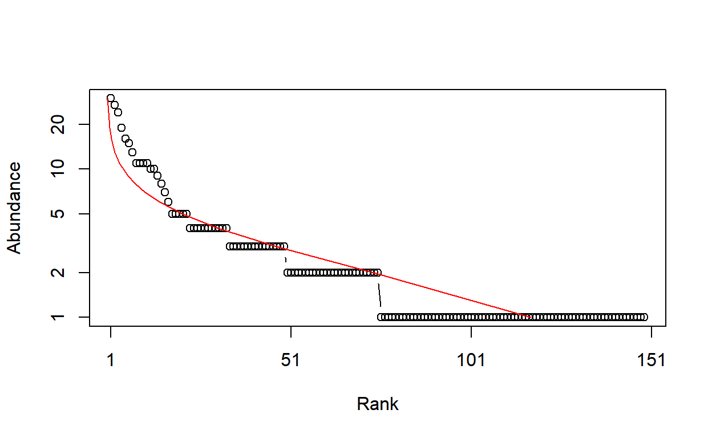
$mu
[1] 0.6843775
$sigma
[1] 0.8568455The parameters of the fitted distribution (here: mean and stadard deviation) are returned by the function.
Abundance vectors can also be converted to probability vectors, summing to 1:
P18 <- as.ProbaVector(N18)The rCommunity function allows drawing random communities:
rc <- rCommunity(1, size=10000, Distribution = "lseries", alpha = 30)
plot(rc, Distribution="lseries")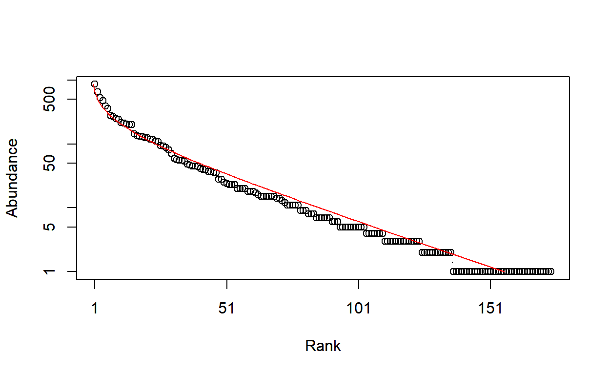
$alpha
[1] 30.19998The Whittaker plot of a random log-series (Fisher, Corbet, and Williams 1943) distribution of 10000 individuals simulated with parameter α = 30 is produced.
The classical indices of diveristy are richness (the number of species), Shannon’s and Simpson’s entropies:
Richness(P18)None
149 Shannon(P18) None
4.421358 Simpson(P18) None
0.9794563 When applied to a probability vector (created with as.ProbaVector or a numeric vector summing to 1), no estimation-bias correction is applied: this means that indices are just calculated by applying their definition function to the probabilities (that is the plugin estimator). None means non correction is applied by the plugin estimator.
When abundances are available (a numeric vector of integer values or an object created by as.ProbaVector), several estimators are available (Marcon 2015) to address unobserved species and the non-linearity of the indices:
Richness(Abd18) Chao1
254.0888 Shannon(Abd18)ChaoWangJost
4.70651 Simpson(Abd18) Lande
0.9814969 The best available estimator is chosen by default: its name is returned.
Those indices are special cases of the Tsallis entropy (1988) or order q (respectively q = 0, 1, 2 for richness, Shannon, Simpson):
Tsallis(Abd18,q=1)ChaoWangJost
4.70651 Entropy should be converted to its effective number of species, i.e. the number of species with equal probabilities that would yield the observed entropy, called Hill (1973) numbers or simply diversity (Jost 2006).
Diversity(Abd18,q=1)ChaoWangJost
110.6652 Diversity is the deformed exponential of order q of entropy, and entropy is the deformed logarithm of of order q of diversity:
(d2 <- Diversity(Abd18,q=2))ChaoWangJost
54.04494 lnq(d2, q=2)ChaoWangJost
0.9814969 (e2 <-Tsallis(Abd18,q=2))ChaoWangJost
0.9814969 expq(e2, q=2)ChaoWangJost
54.04494 Diversity can be plotted against its order to provide a diversity profile. Order 0 corresponds to richness, 1 to Shannon’s and 2 to Simpson’s diversities:
DP <- CommunityProfile(Diversity, Abd18)
plot(DP)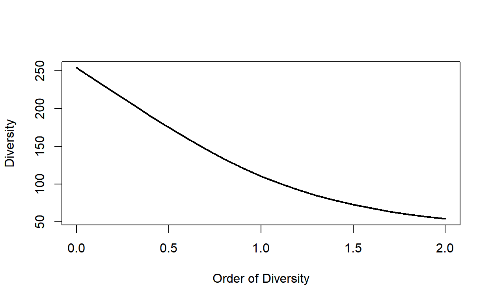
If an ultrametric dendrogram describing species’ phylogeny (here, a mere taxonomy with family, genus and species) is available, phylogenetic entropy and diversity (Marcon and Hérault 2015) can be calculated:
summary(PhyloDiversity(Abd18,q=1,Tree=Paracou618.Taxonomy))alpha or gamma phylogenetic or functional diversity of order 1
of distribution -
with correction: Best
Phylogenetic or functional diversity was calculated according to the tree
Paracou618.Taxonomy
Diversity is normalized
Diversity equals: 51.98951With a Euclidian distance matrix between species, similarity-based diversity (Leinster and Cobbold 2012; Marcon, Zhang, and Hérault 2014) is available:
# Prepare the similarity matrix
DistanceMatrix <- as.matrix(Paracou618.dist)
# Similarity can be 1 minus normalized distances between species
Z <- 1 - DistanceMatrix/max(DistanceMatrix)
# Calculate diversity of order 2
Dqz(Abd18, q=2, Z) Best
1.477898 Profiles of phylogenetic diversity and similarity-based diversity are obtained the same way. PhyloDiversity is an object with a lot of information so an intermediate function is necessary to extract its $Total component:
sbDP <- CommunityProfile(Dqz, Abd18, Z=Z)
pDP <- CommunityProfile(function(X, ...) PhyloDiversity(X, ...)$Total, Abd18, Tree=Paracou618.Taxonomy)
plot(pDP)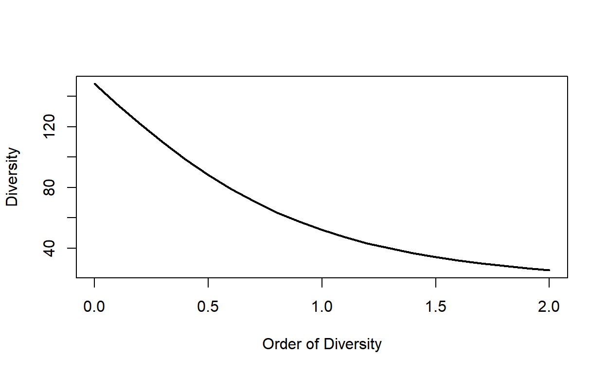
A meta-community is an object defined by the package. It is a set of communities, each of them decribed by the abundance of their species and their weight. Species probabilities in the meta-community are by definition the weighted average of their probabilities in the communities.
The easiest way to build a meta-community consists of preparing a dataframe whose columns are communities and lines are species, and define weights in a vector (by default, all weights are equal):
library("entropart")
(df <- data.frame(C1 = c(10, 10, 10, 10), C2 = c(0, 20, 35, 5), C3 = c(25, 15, 0, 2), row.names = c("sp1", "sp2", "sp3", "sp4"))) C1 C2 C3
sp1 10 0 25
sp2 10 20 15
sp3 10 35 0
sp4 10 5 2w <- c(1, 2, 1)The MetaCommunity function creates the meta-community. It can be plotted:
MC <- MetaCommunity(Abundances = df, Weights = w)
plot(MC)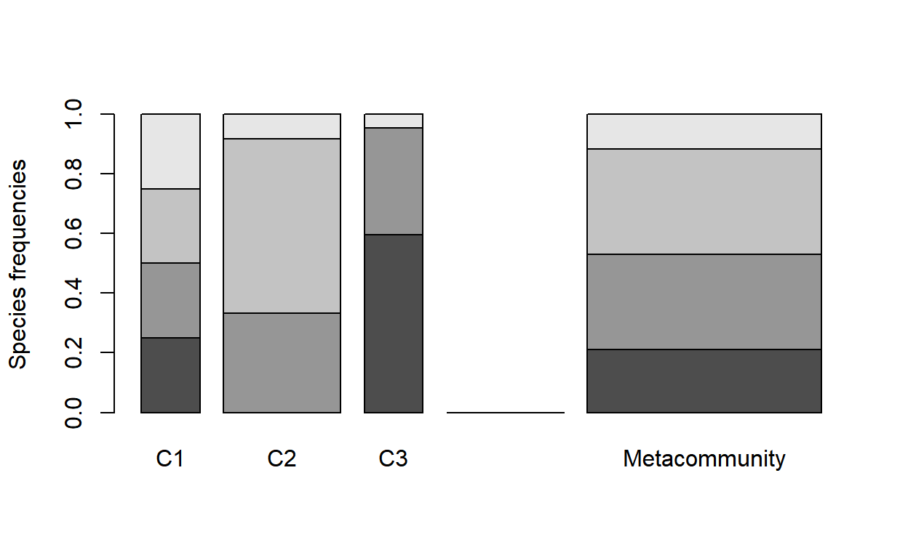
Each shade of grey represents a species. Heights correspond to the probability of species and the width of each community is its weight.
Paracou618.MC is an example meta-community provided by the package. It is made of two 1-ha communities (plots #6 and #18) of tropical forest.
High level functions allow computing diversity of all communities (α diversity), of the meta-community (γ diversity), and β diversity, i.e. the number of effective communities (the number of communities with equal weights and no common species that would yield the observed β diversity).
The DivPart function calculates everything at once, for a given order of diversity q:
p <- DivPart(q = 1, MC = Paracou618.MC)
summary(p)HCDT diversity partitioning of order 1 of metaCommunity Paracou618.MC
Alpha diversity of communities:
P006 P018
66.00455 83.20917
Total alpha diversity of the communities:
[1] 72.88247
Beta diversity of the communities:
None
1.563888
Gamma diversity of the metacommunity:
None
113.98 The α diversity of communities is 73 effective species. γ diversity of the meta-community is 114 effective species. β diversity is 1.56 effective communities, i.e. the two actual communities are as different from each other as 1.56 ones with equal weights and no species in common.
The DivEst function decomposes diversity and estimates confidence interval of α, β and γ diversity following Marcon et al. (2012). If the observed species frequencies of a community are assumed to be a realization of a multinomial distribution, they can be drawn again to obtain a distribution of entropy.
de <- DivEst(q = 1, Paracou618.MC, Simulations = 100)===========================================================================plot(de)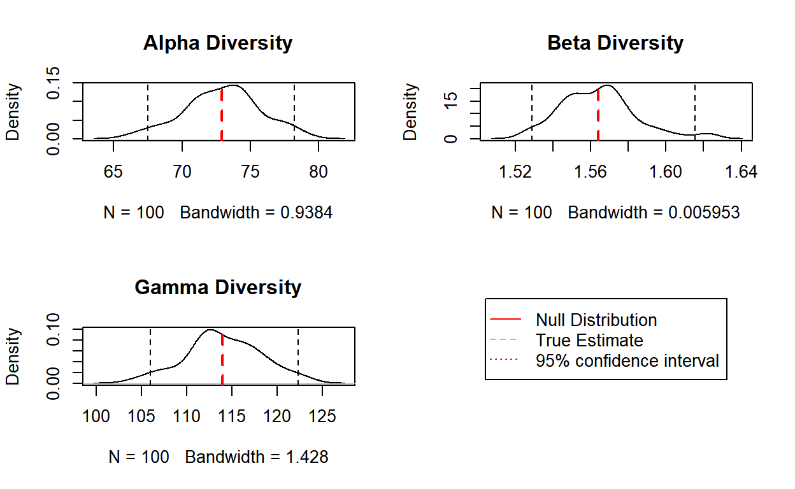
The result is a Divest object which can be summarized and plotted.
DivProfile calculates diversity profiles. The result is a DivProfile object which can be summarized and plotted.
dp <- DivProfile(, Paracou618.MC)
plot(dp)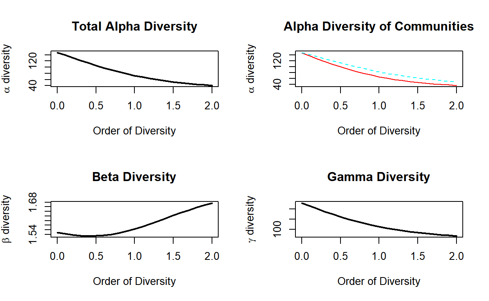
Plot #18 can be considered more diverse than plot #6 because their profiles (top right figure, plot #18 is the dotted red line, plot #6, the solid black one) do not cross (Tothmeresz 1995): its diversity is systematically higher. The shape of the β diversity profile shows that the communities are more diverse when their dominant species are considered.
The bootstrap confidence intervals of the values of diversity (Marcon et al. 2012; Marcon et al. 2014) are calculated if NumberOfSimulations is not 0.
DivPart, DivEst and DivProfile use plugin estimators by default. To force them to apply the same estimators as community functions, the argument Biased = FALSE must be entered. They compute Tsallis entropy and Hill numbers by default. A dendrogram in the argument Tree or a similarity matrix in the argument Z will make them calculate phylogenetic diversity or similarity-based diversity.
Several object classes can be used in entropart to represent phylogenies and calculate phylogenetic diversity. They are detailed here.
Supported phylogenies are classes phylo from package ape, phylog from package ade4 and hclust from package base.
To optimize performance, a specific class PPtree, for “preprocessed trees”, is introduced by the package: it is basically a list containing a phylo and an hclust representation of the phylogeny and preprocessed useful statistics.
The arguments Tree or PhyloTree used in phylogenetic diversity estimation functions of the package may be any of those formats.
Let’s start from an ultrametric distance matrix. Three species are defined, with distance 1 between the first 2 and distance 2 between both and the last one.
dSp <- matrix(c(0, 1, 2, 1, 0, 2, 2, 2, 0), nrow=3, byrow=TRUE)
row.names(dSp) <- colnames(dSp) <- c("A", "B", "C")
dSp A B C
A 0 1 2
B 1 0 2
C 2 2 0An hclust object is created by UPGMA hierarchical clustering.
require("stats")
plot(hTree <- hclust(as.dist(dSp), method="average"), hang=-0.01, axes = F)
axis(2)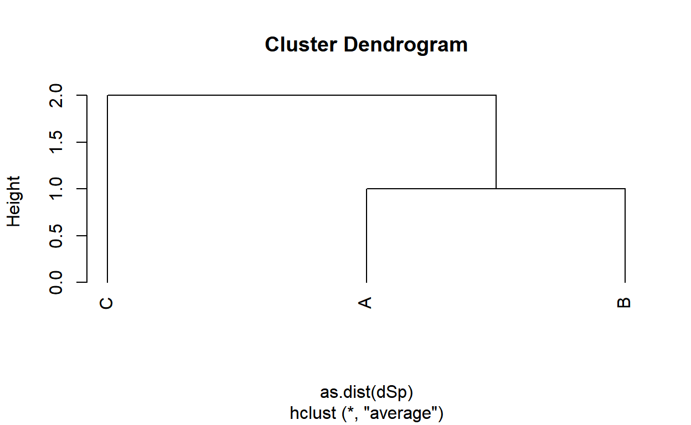
Node heights are stored in $height.
hTree$height[1] 1 2Conversion to a phylo object is straightforward.
require("ape")
plot(phyloTree <- as.phylo(hTree))
axis(1)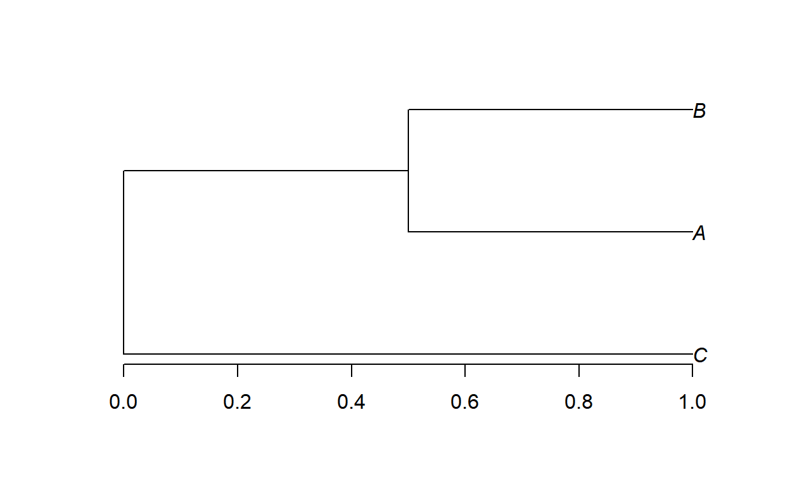
Edge lengths have been divided by 2 during the conversion, as documented in ?as.phylo.hclust.
phyloTree$edge.length[1] 1.0 0.5 0.5 0.5That does not suit our needs. In entropart, edge lengths are multiplied by 2 after conversion, so that phyloobjects can be identical to other phylogenies.
phyloTree$edge.length <- 2*phyloTree$edge.length
plot(phyloTree)
axis(1)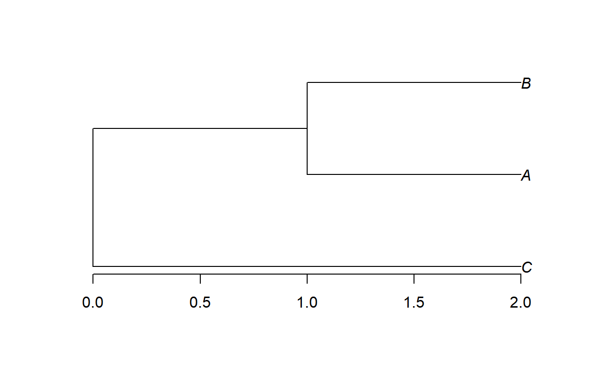
The last conversion is from phylo to phylog.
require("ade4")
plot(phylogTree <- hclust2phylog(hTree))
axis(1)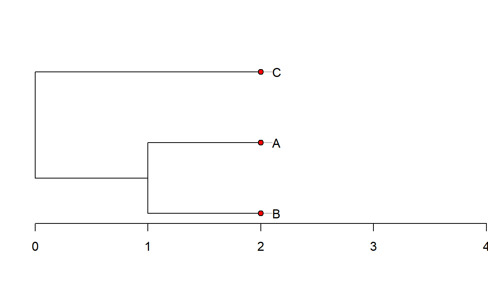
Edge lengths are not stored directly in phylog objects. The $droot component keeps distances from tips to root. The $Wdist component is a dist (half a distance matrix without the zero-diagonal) whose values are $d_{s,t}=\sqrt{2 \delta_{s,t}^2}$, where δs, t is the distance between species s ant t.
phylogTree$droot C A B Int1 Root
2 2 2 1 0 phylogTree$Wdist^2/2 C A
A 2
B 2 1A Newick description of a dendrogram can be read into a phylo object.
NewickABC <- "(C:2,(A:1,B:1):1);"
plot(phyloABC <- ape::read.tree(text=NewickABC))
axis(1)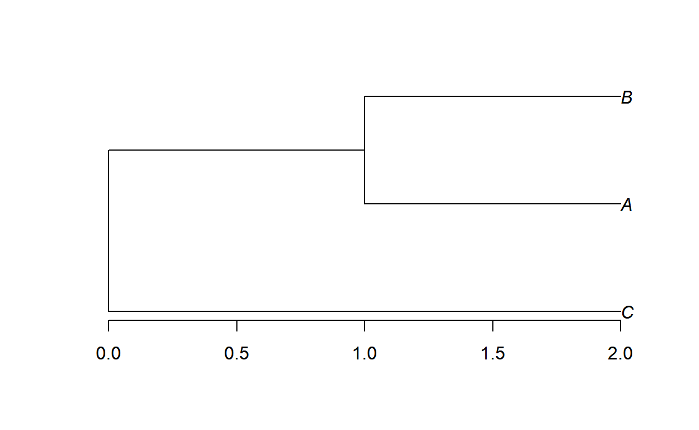
Fisher, R. A., A. S. Corbet, and C. B. Williams. 1943. “The Relation Between the Number of Species and the Number of Individuals in a Random Sample of an Animal Population.” Journal of Animal Ecology 12: 42–58.
Hill, M. O. 1973. “Diversity and Evenness: A Unifying Notation and Its Consequences.” Ecology 54 (2): 427–32.
Jost, Lou. 2006. “Entropy and Diversity.” Oikos 113 (2): 363–75.
Leinster, Tom, and Christina Cobbold. 2012. “Measuring Diversity: The Importance of Species Similarity.” Ecology 93 (3): 477–89.
Marcon, Eric. 2015. “Practical Estimation of Diversity from Abundance Data.” HAL 01212435 (version 2).
Marcon, Eric, and Bruno Hérault. 2015. “Decomposing Phylodiversity.” Methods in Ecology and Evolution 6 (3): 333–39.
Marcon, Eric, Bruno Hérault, Christopher Baraloto, and Gabriel Lang. 2012. “The Decomposition of Shannon’s Entropy and a Confidence Interval for Beta Diversity.” Oikos 121 (4): 516–22.
Marcon, Eric, Ivan Scotti, Bruno Hérault, Vivien Rossi, and Gabriel Lang. 2014. “Generalization of the Partitioning of Shannon Diversity.” PLOS One 9 (3): e90289.
Marcon, Eric, Zhiyi Zhang, and Bruno Hérault. 2014. “The Decomposition of Similarity-Based Diversity and Its Bias Correction.” HAL hal-00989454 (version 1): 1–12.
Preston, F. W. 1948. “The Commonness, and Rarity, of Species.” Ecology 29 (3): 254–83.
Tothmeresz, B. 1995. “Comparison of Different Methods for Diversity Ordering.” Journal of Vegetation Science 6 (2): 283–90.
Tsallis, Constantino. 1988. “Possible Generalization of Boltzmann-Gibbs Statistics.” Journal of Statistical Physics 52 (1): 479–87.